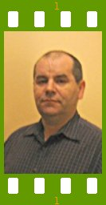

People of openSUSE: Rajko Matovic

Before 2007 ends you can read Rajko Matovic interview. Rajko is an openSUSE community member contributing largely on the Wiki side being a member of the Wiki team, and having more than 1300 pages edited.
- Nicknames: rajko_m, simon123 (and permutations of 123)
- Homepage: Nothing independent to show. Currently http://en.opensuse.org/User:Rajko_m
- Blog: I’m behind on that too, for the same reason as the homepage; there is not much time left after openSUSE. I still have no answer on question: “How to squeeze more hours in a day?” Once I find the answer there will be time for every interest ;-)
- Favorite season: Spring and Autumn, unfortunately that joy is short lasting here in the Midwestern states of the US. Most of the year it is either very hot with little or no wind, or cold and windy. Seems upside down, but it is classic example of continental climate without soothing effect of the sea.
- Motto: You get what you give.
Please introduce yourself!
My name is Rajko Matovic, born some half century ago in Zagreb, Croatia, Currently in St. Louis, Missouri. I’m making a living as assembler for Hunter Engineering. Nothing close to electronics, computers and software.
Tell us about the background to your computer use.
Electronics was my hobby and later, after finishing junior college, my profession and from there to computers is not far.
My first computer was a Sinclair Spectrum, that much I could afford, as at that time PC’s were a rather expensive hobby. The second computer, after few years being busy with electronics, was an i486 PC, third Cyrix MII, and so on. Winds of war moved me from electronics, but I found the way back, for a short time few years ago, but company closed. Having an electronic lab at home is for my interests expensive and I resorted to computers. They take less space, they are cheaper and have enough complexity to keep me busy.
When and why did you start using openSUSE/SUSE Linux?
It was S.u.S.E. Linux 5.3. The CD case tells it was July, 1998. Why? Options were Red Hat and S.u.S.E. Red Hat that was the OS only, and SuSE had a lot of software included, Either were far more affordable than OS/2 warp 3 as third option.
The most important feature for me was gcc, but after installing 5.3 I was overwhelmed with number of programs and functionality and forgot about gcc for a while. GUI was fvwm2 which still lives as low demand GUI in openSUSE repositories, but it is not that good configured out of the box, as it was then.
When did you join the openSUSE community and what made you do that?
In February 2006, I have seen link to wiki in some newsgroup, looked around and found the SLICK which is what I wanted to help, at least with testing.
Then I thought that openSUSE should be installable on low spec machines, but the definition of low spec has changed after two years, and it is easy to get mainstream openSUSE working on nowadays obsolete hardware.
The other motive was that SUSE was and is the best distro I ever tried, and it was obvious that it needs hands to stay that way.
If you look carefully for others they can be faster (Slackware), but they demand a lot of knowledge in all areas of configuration to use that speed. Gentoo can be configured to fit exactly to your computer, but you have to know in advance what the purpose of computer is, as any major change after initial setup means that you have to use another computer for a day or two, until new configuration is done, and than again to be expert for many areas.
In what way do you participate in the openSUSE project?
Mainly editing and writing articles on openSUSE wiki. It fits fine to my schedule limitations. Second is helping others where I have usable experience. Testing software and reporting bugs is third way.
What especially motivates you to participate in the openSUSE project?
Friendly people and relaxed atmosphere. There is always something going on, always something to do.
What do you think was your most important contribution to the openSUSE project/community or what is the contribution that you’re most proud of?
Nothing large yet. The most exposed Portal to openSUSE is standing on the same spot for a while. It is needed for visitors that want to browse for help, but don’t know where to start. Portal should be that place. I’m thinking to change the goal from indexing all pages to selection of good articles presented in the same way as Wikipedia Portal pages.
Now when more people contributing and editing articles I would be able give more time to Portal that is now in the most rudimentary form.
When do you usually spend time on the openSUSE project?
When the rest have TV time, than it is mine for openSUSE. I really can’t watch TV for a long time.
Three words to describe openSUSE? Or make up a proper slogan!
Good rounded distro.
What do you think is missing or underrated in the distribution or the project?
Access to knowledge for the first time users and graphic content on the wiki. Wiki as it is now is not really visually appealing. It is missing a lot of graphic.
Veterans know where to look for, and can recognize obsolete, inaccurate or partial information. They know where is for instance /etc, how to use text editor, how to find appropriate commands and applications, but new users have no way around and we have to organize help.
http://en.opensuse.org/Linux_Documentation was one of attempts to bring closer to user attention that Linux has a well of documentation. I know from my own experience that when you start you know nothing and that hits you hard, specially if there is advanced knowledge of another OS. How to list directory content? Command ‘dir’? No, it is ‘ls’. ls /?
Hmm. It doesn’t help much, and so on.
What do you think the future holds for the openSUSE project?
Success, what else. Reference: http://en.opensuse.org/SUSE_Time_Machine ;-) We are growing, more people are coming and participating in all areas.
A person asks you why he/she should choose openSUSE instead of other distribution/OS. What would be your arguments to convince him/her to pick up openSUSE?
The same that I used to select S.u.S.E. 5.3.
It has the best selection of application that one might need, it is fast, good looking, almost bleeding edge, without problems that you can see in Debian, using the same type of repositories.
They can get help any time they need it using mail lists, IRC, and me.
Which members of the openSUSE community have you met in person?
None, but having contacts every day creates feeling that I did.
How many icons are currently on your desktop?
KDE3 it is 14. KDE4 2 widgets.
What is the application you can’t live without? And why?
Obviously not only one fits in this, so besides Internet communications, looking what I add first to installed system it would be Midnight Commander. It saves time and works well even when GUI doesn’t.
Looking in the Main Menu for most used applications it would be YaST, than come graphics and GIMP, as well as recently discovered XaraLX.
Which application or feature should be invented as soon as possible?
Is there anything left to be invented :-) (some people said long time ago).
I’m sure that there is a lot of areas that can be improved, but for me might be interesting to see large non volatile storage. Present flash cards and hard disk emulation based on flash memory is huge step forward, but high price and limited life span makes that not so attractive for many use cases. They demand different hardware and operating system approach to make them economic viable alternative.
Which is your preferred text editor? And why?
The mcedit and Kate, both have a lot of features that make editing easy with a little learning.
Which famous person would you want to join the openSUSE community?
Famous in what?
Considering Linux world I guess that we have some of them already. Some of the finest Linux developers are here.
Which computer related skills would you like to have?
Programming, but with amount of time I have for learning there will be no improvements anytime soon. It is painful slow to look in source code written in foreign language :-)
The Internet crashes for a whole week. How would you feel, what would you do?
Take look around, pull tools out and make something good outside of the virtual world. Though, I would often check if it’s fixed.
Which is your favorite movie scene?
I guess that if I would make collection of the best scenes it would take whole evening to see them.
Star Trek or Star Wars?
StarTrek. Star Wars detailed just one idea, while StarTrek was dealing with many of them, and going much deeper in development of ideas than who will win in the war. In StartTrek battle as resolution of a conflict was one of options, but not preferred one.
What is your favorite food and drink?
The list of my favorites would look like a restaurant menu. I like Mediterranean and Balkan peninsula kitchen. Drink is coffee, but there are many others that fit better with different menus.
Favorite game or console (in your childhood and nowadays)?
My game console was area behind building where we lived and a riverbank. Yes, I’m so old that I actually played non electronic games.
Which city would you like to visit?
World is big, and there are many places left to visit. I haven’t visited some of local attractions yet.
What is your preferred way to spend your vacation?
It would be traveling, but I have not much opportunity for that lately.
Someone gives you $1.000.000. What would you do with the money?
Pay off loans and take vacation to think what to do with the rest. That is a lot of money.
If traveling through time was possible, when would we be most likely to meet you?
In the future to see where world goes and in the past to meet some famous people. It would be hard to find me.
There’s a thunderstorm outside. Do you turn off your computer?
No. Living in a city has some advantage when it comes to thunderstorms.
Have your ever missed an appointment because you forgot about it while sitting at your computer?
Not that important that I would remember.
Show us a picture of something, you have always wanted to share!
Always is too general. Here are few views of St. Louis. http://www.panoramio.com/photo/620775 http://www.panoramio.com/photo/604808 http://www.panoramio.com/photo/474683 http://www.panoramio.com/photo/429925 http://www.panoramio.com/photo/353557
You couldn’t live without…
Sorrowly, but I can’t without air, water and food, everything else is optional. Computers are for sure high on my list, but not top priority.
Which question was the hardest to answer?
None.
What other question would you like to answer? And what would you answer?
How to put more hours in a day? I don’t know.